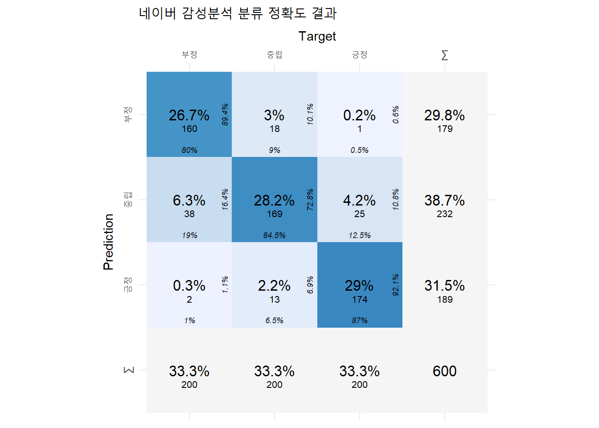

pacman::p_load(
"tidyverse", "tidytext", "data.table", "knitr", "gt", "scales", "cvms",
"httr", "jsonlite", "future", "furrr")들어가기
한국어 감서서 토픽모델링 주제와 메타데이터 사이의 공변량를 분석한다. 메타데이터는 텍스트 외 주제와 관련될 수 있는 데이터를 말한다. 내담자 성별이나 상담 방법(유선상담 등)은 특정 주제가 많이 등장할 수도 있다. 이런 공변량(covariate)를 분석하며, 이는 stm 토픽모델링의 장점 중 하나다.
1. 데이터 준비하기
분석에 필요할 패키지를 불러온다.
분석에 쓸 데이터를 여기에서 다운 받아 불러온다.
db_sent_1a <- fread('data/sample.csv')데이터는 구글 리뷰 문장(sent_content)을 긍정과 중립, 부정으로 라벨링(label)하고 구글 자연어 처리의 감성분석 점수(score)로 구성된다.
| sent_content | label | senti_score_google |
|---|---|---|
| 탁트인 한강 전망이 좋아요 | 긍정 | 0.9 |
| 물난리 후 첫주말에 갔는데 | 중립 | -0.1 |
| 교통,주차 너무힘들어요 | 부정 | 0.0 |
위 데이터에서 긍정과 중립, 부정을 각각 200개씩 무작위로 샘플링한다.
set.seed(777) # 난수 고정
db_sent_1b <- db_sent_1a %>%
group_by(label) %>%
sample_n(200) %>% ungroup() %>%
arrange(label) %>%
mutate(id = row_number())2. 감성분석
2.1. 네이버 감성분석
감성분석 준비
CLOVA Sentiment 서비스 설명과 가이드라인은 여기에서 볼 수 있다. 콘솔 접속과 서비스 활성화, 인증정보 등을 따라하면 된다.
R을 활용한 네이버 감성분석
아래 코드로 할당받은 네이버 감성분석 API를 활용하여 샘플 데이터를 감성분석한다.
# Define API endpoint and headers
url <- "https://naveropenapi.apigw.ntruss.com/sentiment-analysis/v1/analyze"
client_id = "nqbdvhltg0"
client_secret = "32GT8wyL2jSoQVnq9QEsBkNI4BDrQztxONx8dVF2"
headers_user <- c(
"X-NCP-APIGW-API-KEY-ID" = client_id,
"X-NCP-APIGW-API-KEY" = client_secret,
"Content-Type" = "application/json"
)
db_sent_1c <- db_sent_1b %>%
group_split(id)
db_sent_2a <- rbindlist(
future_map(db_sent_1c, function(x){
sent_content_input <- x$sent_content
seti_analysis_respon <- POST(
url = "https://naveropenapi.apigw.ntruss.com/sentiment-analysis/v1/analyze",
body = toJSON(list(content = sent_content_input) , auto_unbox = TRUE, pretty = TRUE),
add_headers(.headers = headers_user),
encode = "json") %>%
content()
doc_dt <- data.table(
doc_content = sent_content_input,
doc_senti = seti_analysis_respon$document$sentiment,
doc_confi_neg = seti_analysis_respon$document$confidence$negative,
doc_confi_posi = seti_analysis_respon$document$confidence$positive,
doc_confi_neut = seti_analysis_respon$document$confidence$neutral
)
# create a data.table of sentence-level information
sent_dt <- data.table(
sent_content = sapply(seti_analysis_respon$sentences, function(x) x$content),
sent_offset = sapply(seti_analysis_respon$sentences, function(x) x$offset),
sent_length = sapply(seti_analysis_respon$sentences, function(x) x$length),
sent_sentiment = sapply(seti_analysis_respon$sentences, function(x) x$sentiment),
sent_confi_neg = sapply(seti_analysis_respon$sentences, function(x) x$confidence$negative),
sent_confi_posi = sapply(seti_analysis_respon$sentences, function(x) x$confidence$positive),
sent_confi_neut = sapply(seti_analysis_respon$sentences, function(x) x$confidence$neutral),
sent_highlight_offset = sapply(seti_analysis_respon$sentences, function(x) x$highlights[[1]]$offset),
sent_highlight_length = sapply(seti_analysis_respon$sentences, function(x) x$highlights[[1]]$length)
)
print("end")
comb_dt <- cbind(id = x$id, doc_dt, sent_dt)
}))감성분석 결과는 다음과 같다. 여기서 doc와 senti로 시작하면 각각 문서와 그 문서를 구성하는 문장으로 나타낸다. 네이버 클로버 감성분석은 분석하는 문서(doc)의 문장을 자동으로 분류해준다.
| id | doc_content | doc_senti | doc_confi_neg | doc_confi_posi | doc_confi_neut | sent_content | sent_offset | sent_length | sent_sentiment | sent_confi_neg | sent_confi_posi | sent_confi_neut | sent_highlight_offset | sent_highlight_length |
|---|---|---|---|---|---|---|---|---|---|---|---|---|---|---|
| 1 | 그늘도 많고 쉴자리도 많아요. | positive | 0.0002367 | 99.99958 | 0.0001859 | 그늘도 많고 쉴자리도 많아요. | 0 | 16 | positive | 0.0000142 | 0.9999746 | 0.0000112 | 0 | 15 |
| 2 | 공기좋음 | positive | 0.0367223 | 99.95812 | 0.0051644 | 공기좋음 | 0 | 4 | positive | 0.0022033 | 0.9974868 | 0.0003099 | 0 | 4 |
| 3 | 맑은하늘을 맘껏볼수있는곳 | positive | 0.0001375 | 99.99956 | 0.0003061 | 맑은하늘을 맘껏볼수있는곳 | 0 | 13 | positive | 0.0000083 | 0.9999734 | 0.0000184 | 0 | 13 |
2.2. 구글 감성분석
구글 감성 분석은 여기에서 자세히 배울 수 있다. 네이버 감성분석과 같이 R를 활용하여 구글 감성 분석 API를 쓰는 방법은 추후에 업데이트하고자 한다.
3. 감성분석 비교
3.1. 분류 정확도 요약
네이버 감성분석은 F1 점수가 0.84로 구글 감성분석 0.642보다 더 높았다.
| 지표 | 구글 감성분석 | 네이버 감성분석 |
|---|---|---|
| F1-score | 0.6423675 | 0.8404454 |
| Balanced Accuracy | 0.7362500 | 0.8787500 |
3.2. 비교 데이터셋 만들기
분석할 감성분석 결과 DB를 만들어준다.
db_sent_2b <- unique(db_sent_2a, by = "id") %>%
select(id, doc_senti)
db_sent_f <- db_sent_1b %>%
left_join(db_sent_2b, by = "id") %>%
mutate(
senti_label_google = case_when(
between(senti_score_google, 0.25, 1) ~ "긍정",
between(senti_score_google, -0.25, 0.25) ~ "중립",
TRUE ~ "부정"),
senti_label_naver = case_when(
doc_senti == "positive" ~ "긍정",
doc_senti == "neutral" ~ "중립",
TRUE ~ "부정")
) %>%
select(id, sent_content, senti_label_google, senti_label_naver, label) %>%
mutate_at(c("senti_label_google", "senti_label_naver", "label"), factor, levels = c("부정", "중립", "긍정"))conf_mat_google <- confusion_matrix(
targets = db_sent_f$label,
predictions = db_sent_f$senti_label_google
)
conf_mat_naver <- confusion_matrix(
targets = db_sent_f$label,
predictions = db_sent_f$senti_label_naver
)3.3. 감성분석 상세
구글 감성분석
plot_confusion_matrix(conf_mat_google$`Confusion Matrix`[[1]],
class_order = c("긍정", "중립", "부정"),
add_sums = TRUE)Warning in plot_confusion_matrix(conf_mat_google$`Confusion Matrix`[[1]], :
'ggimage' is missing. Will not plot arrows and zero-shading.Warning in plot_confusion_matrix(conf_mat_google$`Confusion Matrix`[[1]], :
'rsvg' is missing. Will not plot arrows and zero-shading.Warning in plot_confusion_matrix(conf_mat_google$`Confusion Matrix`[[1]], :
'ggnewscale' is missing. Will not use palette for sum tiles.
plot_confusion_matrix(conf_mat_naver$`Confusion Matrix`[[1]],
class_order = c("긍정", "중립", "부정"),
add_sums = TRUE) +
ggplot2::labs(title = "네이버 감성분석 분류 정확도 결과")Warning in plot_confusion_matrix(conf_mat_naver$`Confusion Matrix`[[1]], :
'ggimage' is missing. Will not plot arrows and zero-shading.Warning in plot_confusion_matrix(conf_mat_naver$`Confusion Matrix`[[1]], :
'rsvg' is missing. Will not plot arrows and zero-shading.Warning in plot_confusion_matrix(conf_mat_naver$`Confusion Matrix`[[1]], :
'ggnewscale' is missing. Will not use palette for sum tiles.
ggsave('image/plot_conf_mat_naver.png', dpi = 300, width = 5.5, height = 5.5)